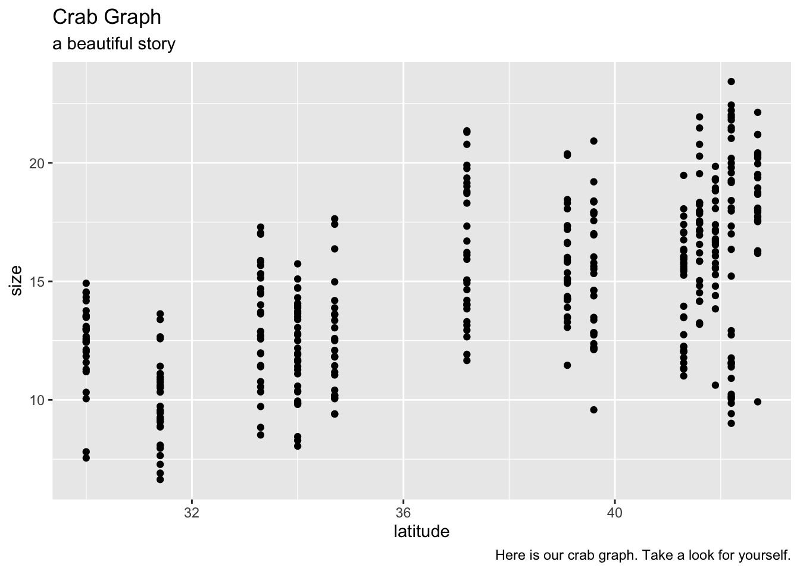

library(lterdatasampler)
library(tidyverse)
library(kableExtra)
?pie_crabCrab Activity
Introduction to Crabs
Hi we’re Erica and Jillian and this has been a crabload of fun. Our main finding was the colder the water the bigger the crab.
ggplot(data = pie_crab,
aes(x = latitude,
y = size)) +
geom_point() +
labs(title = "Crab Graph",
subtitle = "a beautiful story",
caption = "Here is our crab graph. Take a look for yourself.")
- To your document, add an unfinalized summary table containing the mean, standard deviation, and sample size of fiddler crab carapace widths by site (tip: use
round(mean(), 2)to round a value to 2 decimal places)
pie_crab_summary <- pie_crab %>%
group_by(site) %>%
summarise(mean_size = round(mean(size),2),
std_size = round(sd(size),2),
sample_size = n())- prettify the table
pie_crab_summary %>%
kable(col.names = c("Site", "Mean Carapace Width (mm)","Std. Deviation Carapace Width (mm)", "Sample Size")) %>%
kable_styling(bootstrap_options = "striped")| Site | Mean Carapace Width (mm) | Std. Deviation Carapace Width (mm) | Sample Size |
|---|---|---|---|
| BC | 16.20 | 4.81 | 37 |
| CC | 16.82 | 2.05 | 27 |
| CT | 14.69 | 2.36 | 33 |
| DB | 15.60 | 2.12 | 30 |
| GTM | 12.40 | 1.80 | 28 |
| JC | 15.27 | 2.72 | 30 |
| NB | 17.14 | 2.29 | 29 |
| NIB | 13.29 | 2.42 | 30 |
| PIE | 18.50 | 2.30 | 28 |
| RC | 12.49 | 2.34 | 25 |
| SI | 9.85 | 1.79 | 30 |
| VCR | 16.34 | 2.94 | 30 |
| ZI | 12.06 | 2.01 | 35 |
##Citations
Johnson, D. 2019. Fiddler crab body size in salt marshes from Florida to Massachusetts, USA at PIE and VCR LTER and NOAA NERR sites during summer 2016. ver 1. Environmental Data Initiative. https://doi.org/10.6073/pasta/4c27d2e778d3325d3830a5142e3839bb (Accessed 2021-05-27).
Johnson DS, Crowley C, Longmire K, Nelson J, Williams B, Wittyngham S. The fiddler crab, Minuca pugnax, follows Bergmann’s rule. Ecol Evol. 2019;00:1–9. https://doi.org/10.1002/ece3.5883